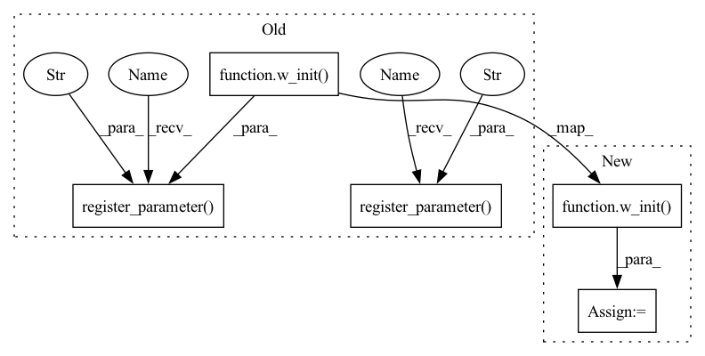

Pattern ID :23391

Before Change
w_init = initializers.truncated_normal(stddev=1.0 / np.sqrt(self.in_dim))
b_init = initializers.zeros
rng_key_w, rng_key_b = jax.random.split(rng_key)
self.register_parameter(
"weight", w_init((in_dim, out_dim), jnp.float32, rng_key_w)
)
if self.with_bias:
self.register_parameter("bias", b_init((out_dim,), jnp.float32, rng_key_b))
def __call__(self, x: np.ndarray) -> jnp.ndarray:
Applies a linear transformation to the inputs along the last dimension.
After Change
w_init = initializers.truncated_normal(stddev=1.0 / np.sqrt(self.in_dim))
b_init = initializers.zeros
rng_key_w, rng_key_b = jax.random.split(rng_key)
self.weight = w_init((in_dim, out_dim), jnp.float32, rng_key_w)
if self.with_bias:
self.bias = b_init((out_dim,), jnp.float32, rng_key_b)
def __call__(self, x: np.ndarray) -> jnp.ndarray:
In pattern: SUPERPATTERN
Frequency: 3
Non-data size: 5
Instances
Fragment ID: 73528951
Project Name: ntt123/pax
Commit Name: a52541a108caf1a6f998f35e672ba26553ff908f
Time: 2021-11-02
Author: 9960521+NTT123@users.noreply.github.com
File Name: pax/_src/nn/linear.py
M Class Name: Linear
N Class Name: Linear
M Method Name: __init__(0)
N Method Name: __init__(0)
M Parent Class: ParameterModule
N Parent Class: Module
M File Name: pax/_src/nn/linear.py
N File Name: pax/_src/nn/linear.py
M Start Line: 54
M End Line: 58
N Start Line: 54
N End Line: 56
'>
Before Change
fan_in = np.prod(w_shape[:-1])
w_init = initializers.truncated_normal(stddev=1.0 / np.sqrt(fan_in))
self.register_parameter("weight", w_init(w_shape, jnp.float32, w_rng_key))
if with_bias:
if b_init is None:
b_init = initializers.zeros
b_shape = [out_features]
self.register_parameter("bias", b_init(b_shape, jnp.float32, b_rng_key))
else:
self.bias = None
def __call__(self, x: jnp.ndarray) -> jnp.ndarray:
After Change
fan_in = np.prod(w_shape[:-1])
w_init = initializers.truncated_normal(stddev=1.0 / np.sqrt(fan_in))
self.weight = w_init(w_shape, jnp.float32, w_rng_key)
if with_bias:
if b_init is None:
b_init = initializers.zeros
'>
Fragment ID: 73528950
Project Name: ntt123/pax
Commit Name: a52541a108caf1a6f998f35e672ba26553ff908f
Time: 2021-11-02
Author: 9960521+NTT123@users.noreply.github.com
File Name: pax/_src/nn/conv.py
M Class Name: Conv
N Class Name: Conv
M Method Name: __init__(0)
N Method Name: __init__(0)
M Parent Class: ParameterModule
N Parent Class: Module
M File Name: pax/_src/nn/conv.py
N File Name: pax/_src/nn/conv.py
M Start Line: 80
M End Line: 97
N Start Line: 80
N End Line: 97
'>
Before Change
if b_init is None:
b_init = initializers.zeros
self.register_parameter("weight", w_init(w_shape, jnp.float32, w_rng_key))
b_shape = [out_features]
self.register_parameter("bias", b_init(b_shape, jnp.float32, b_rng_key))
def __call__(self, x: jnp.ndarray) -> jnp.ndarray:
assert len(x.shape) == len(self.kernel_format)
After Change
if b_init is None:
b_init = initializers.zeros
self.weight = w_init(w_shape, jnp.float32, w_rng_key)
b_shape = [out_features]
self.bias = b_init(b_shape, jnp.float32, b_rng_key)
def __call__(self, x: jnp.ndarray) -> jnp.ndarray:
'>
Fragment ID: 73528952
Project Name: ntt123/pax
Commit Name: a52541a108caf1a6f998f35e672ba26553ff908f
Time: 2021-11-02
Author: 9960521+NTT123@users.noreply.github.com
File Name: pax/_src/nn/conv.py
M Class Name: ConvTranspose
N Class Name: ConvTranspose
M Method Name: __init__(0)
N Method Name: __init__(0)
M Parent Class: ParameterModule
N Parent Class: Module
M File Name: pax/_src/nn/conv.py
N File Name: pax/_src/nn/conv.py
M Start Line: 346
M End Line: 361
N Start Line: 346
N End Line: 361